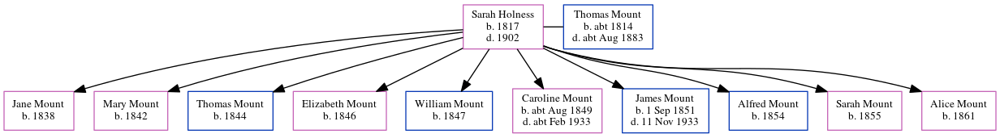

Caroline Payton (née Mount) cAug 1849 - c1933
[ Home ] | [ Calendar ] | [ Surnames Index ] | [ Errors ] | [ Family History ]The child of Thomas Mount (a labourer) and Sarah Holness (a charwoman), Caroline Mount, the first cousin four-times-removed on the mother's side of Nigel Horne, was born in Herne Bay, Kent, England c. Aug 18491,2 and had 10 children with William Payton (a brickmaker): William E T, Ada, Charlotte H, Sarah A E, Alice M, Catherine J, Frances Louisa, Henry G, Arthur Albert and Edith D, along with 1 surviving child.
During her life, she was living at Mortimer Street in Herne Bay on 30 Mar 18516; at King Street in Herne Bay on 7 Apr 18615; in Herne, Kent, England on 3 Apr 18813; and in Hampton, Kent, England on 5 Apr 18914 - less than a mile from her cousin on her father's side Abraham Mount who was living at 2 Salts Lane in Herne Bay.
She died c. Feb 1933 in Herne Bay2.
Parents
- Thomas was born c. 1814
- Sarah Harvey was born in 1817
Children
- William E T was born in 1868
- Charlotte H was born in 1872
- Sarah A E was born in 1875
- Alice M was born in 1877
- Catherine J was born in 1879
- Frances Louisa was born on 8 Jan 1882
- Henry G was born in 1886
- Arthur Albert was born on 6 Aug 1887
- Edith D was born in 1891
Citations
- England & Wales births 1837-2006 - Findmypast
- England & Wales deaths 1837-2007 - Findmypast
- 1881 England, Wales & Scotland Census - Findmypast (was age 34 and the wife of the head of the household)
- 1891 England, Wales & Scotland Census - Findmypast (was age 42 and the wife of the head of the household)
- 1861 England, Wales & Scotland Census - Findmypast (was age 11 and the daughter of the head of the household)
- 1851 England, Wales & Scotland Census - Findmypast (was age 2 and the daughter of the head of the household)
Media
England & Wales births 1837-2006 Transcription - BMD-B-1849-3-IR-000587-008
England & Wales deaths 1837-2007 - BMD/D/1933/1/AZ/000957/142
1881 England, Wales & Scotland Census - GBC/1881/0004743268
1891 England, Wales & Scotland Census - GBC/1891/0005762409
Family Tree
Map
Generated by ged2site. Last updated on Jul 3, 2024
Known Issues
Census information missing between Census UK 1861 and Census UK 1881